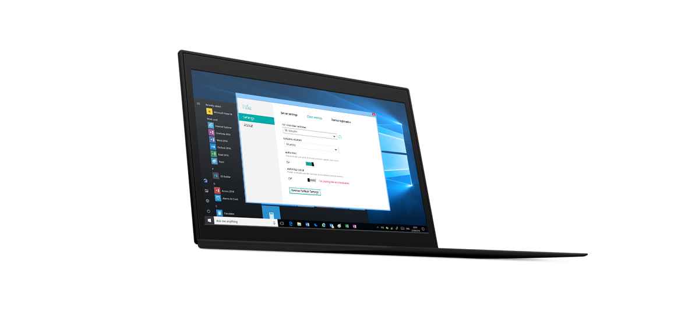
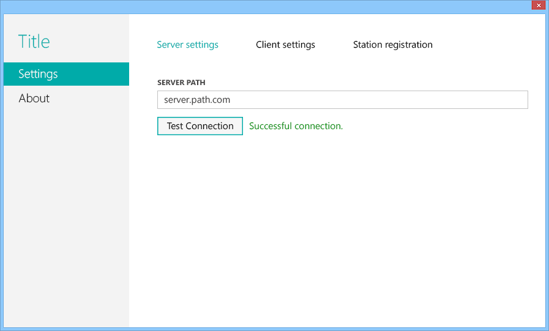
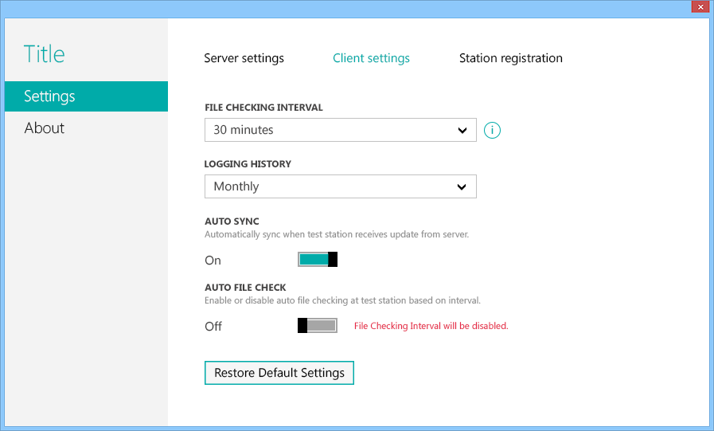
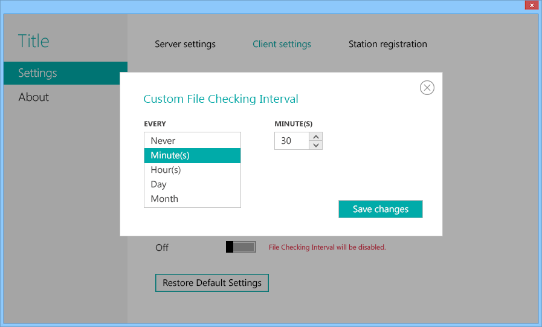
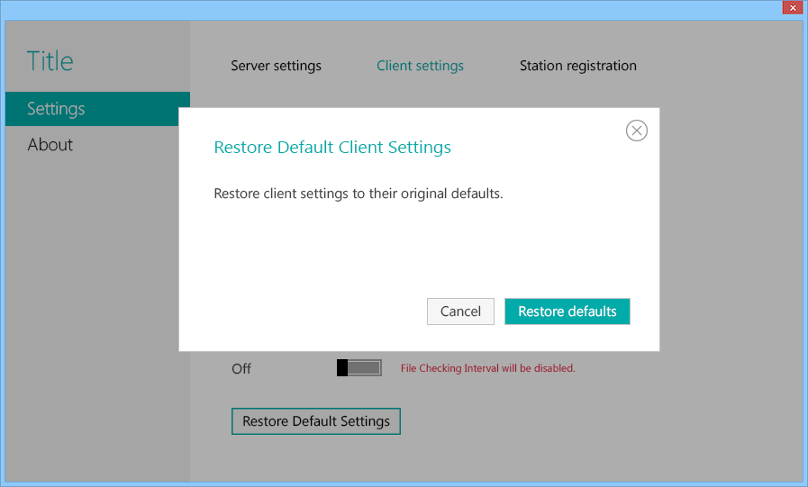

Desktop UI - Utility Tool
ObjectiveDesign a high fidelity prototype of a manufacturing utility tool based on business requirements and various use cases.
Designed forWindows - Utility Tool
Made withPhotoshop
Works

(1) Simple and intuitive UI reduces learning curve.

(2) Pre-populated fields and default states guide users to understand common practices while avoiding analysis paralysis.

(3) As much as simplicity is desired, having the flexibility to customize conditions allows the product to be utilized in more use cases.

(4) Allowing users to revert to the pre-existing value of a user-configurable settings with minimal user interaction should be required.